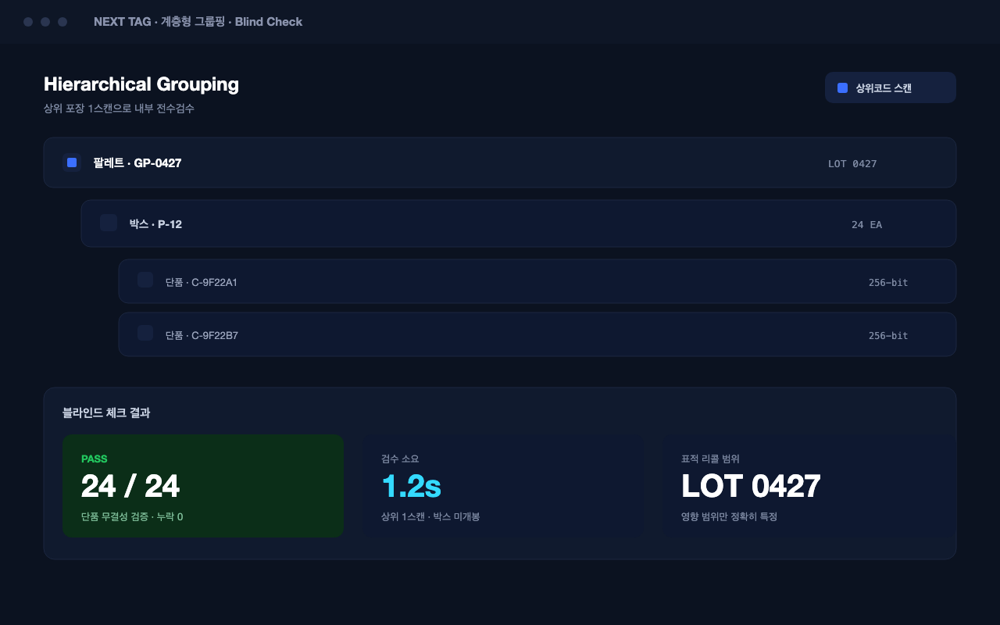

서명 검증 완료
변경 불가 원장
* 제품 예시 화면입니다. 실제 콘솔 스크린샷으로 교체 예정.
* 제품 예시 화면입니다. 실제 콘솔 스크린샷으로 교체 예정.
모든 접점의 이력을 불변으로 기록해, 규제 소명과 법적 증거로 즉시 쓸 수 있는 신뢰 인프라를 만듭니다.
printed·packed·shipped·scanned·resolved 등 모든 이벤트에 타임스탬프와 서명을 남기고, 수정할 수 없는 원장(WORM)에 기록합니다. 위·변조 자체를 무력화합니다.

* 제품 예시 화면 · 교체 예정
입출고·스캔·판정 이력을 규정에 맞춰 즉시 제출할 수 있습니다. 시리얼라이제이션·추적 규제에 정합해 글로벌 진출의 규제 기반이 됩니다.
동의 기반으로 수집한 스캔 데이터(빈도·위치·디바이스·재구매 주기)를 개인 식별 없이 세그먼트화해 축적합니다. 마케팅·CRM·리타겟팅에 재활용하는 1st-party 자산입니다.
기록은 불변, 데이터는 자산.